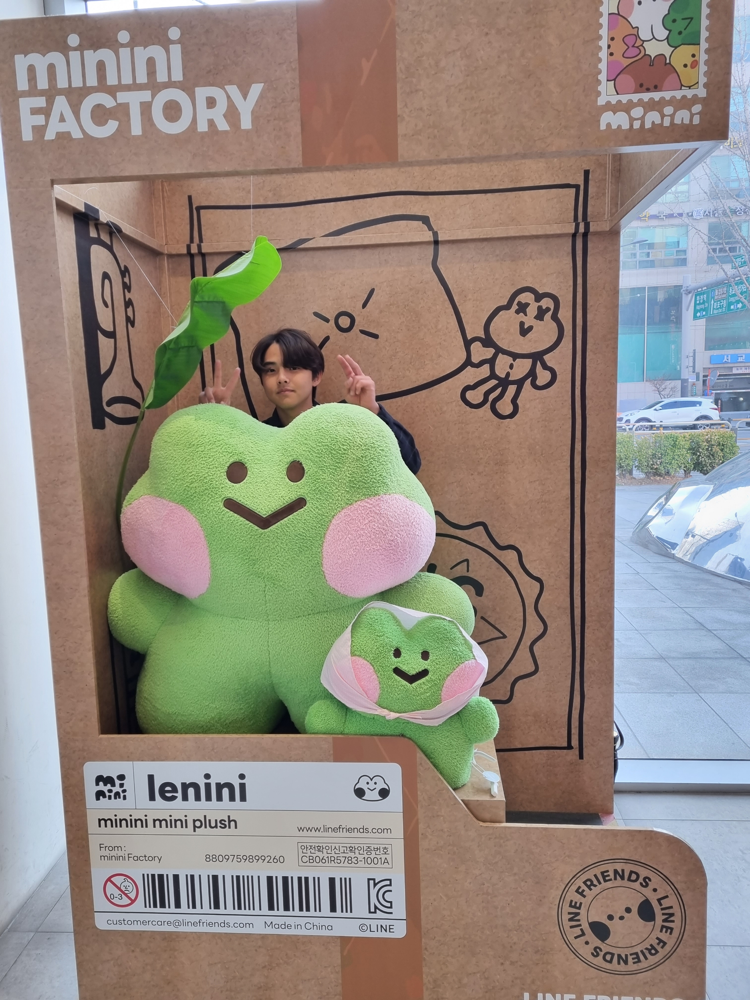

안녕하세요. 저는 김채운입니다.
아래는 얼마 전에 찍은 제 사진들입니다.

제 화려한 이력은 다음과 같습니다.
- 취미는 음악. 피아노를 9살때부터 쳤고, 초5때 드럼을 시작했으며 중1때 기타를 독학했고 중, 고등 6년동안 밴드부 활동을 했었다
- 소주 최고기록은 2시간 4병 반.
- 현재는 공과대학 밴드동아리 <활천>에서 일렉기타 세션으로 활동 중이다.
- 공대배 과반별 축구대회에서 절호의 기회를 시원하게 날리는 엄청난 빅찬스미스를 기록한 적이 있다.
- 2022 RC-넥슨 창의플랫폼 대상 수상. 수상작품 보기
- 가장 좋아하는 밴드는 잔나비. <나의 기쁨 나의 노래> - 잔나비
나에 관한 기초정보
| 이름 |
김채운 |
학번 |
2022149025 |
| 학과 |
인공지능학과 |
| 학년 |
2학년 1학기 재학중 |
| 거주지 |
강원도 홍천군 |
| 장단점 |
장점 |
잘 참음. 감정기복이 거의 없음 |
| 단점 |
키가 작음 히힛 |